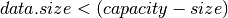

Network Buffer¶
-
class
NetworkBuffer¶ A network profile contains a sorted list of time- and data-contiguous entries of type
ResourceEntry. The profiles are periodic with a specific epoch-centric start-time.-
max_size()¶ Return the maximum size that the buffer has reached.
Return type: long
-
size()¶ Return the current size of the buffer.
Return type: long
-
capacity()¶ Return the capacity of the buffer.
Return type: long
-
capacity(_capacity) Set the capacity of the buffer.
Parameters: long __capacity (in) – new capacity for the buffer Return type: void
-
push(data)¶ Add data to the buffer if . Return 0 on success, -1 on failure.
Parameters: message* data (in) – message to be added to the buffer Return type: int
-
pop(data)¶ Returns 0 for successful data retrieval from the buffer, -1 otherwise.
Parameters: message*& data (in-out) – Message pointer to data retrieved Return type: int
-